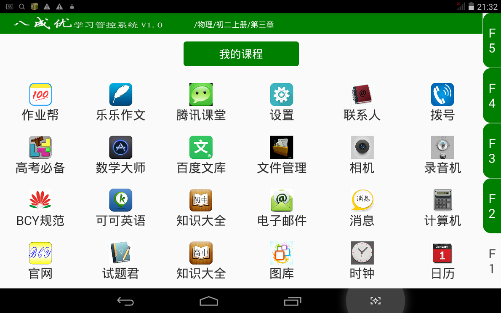

引 言
【BCY简介】
很多人问八成优是什么？下面从三个主要方面介绍一下她的特性：
1、从功能及型式上说：她是一位具有封闭式环境、简约式界面、步进型质控、可以自编自用、可以接受教师推送，可广播到学生常用软件“作业帮”、“WPS”等第三方应用，能将自编成果输出（打印胶装）的学习管控软件，是一款优秀的学生私密助手；
2、从内容上说：她是一位有思想、有方法、懂管理的教育规划师，又是一个格局大、思路高、讲规则的主动课堂；
3、从技术上说：她是欲将中学生学习相关的众多任务和众多需求一并解决的最优方案；是欲将与教育相关的方法、工具乃至组织与评价等综合问题统筹解决的技术创新
【BCY内容】
1、三个进度管理目标分别是：高考总目标，单科目目标，阶段分目标；高考总目标一般定为4到5年，单科及阶段分目标由总目标分解后确定。
2、三个学习过程质量控制分别是：F3（强表）、F4（践行）、F5（差异端）。
3、必须严格依照“BCY规范”规定正确使用本系统（设备）。
以上内容可概括为一句话：“三管三控依规范”
【BCY企业宗旨】
八成优学习管控系统，用一款最简办法解决了现有教育体系中错综繁杂的管理、技术、资源以及质量保证等综合问题为宗旨。包括：学生学习进度目标管理、学习过程质量控制、教育成果评价，也涉及教育资源配置等等。
【BCY企业目标】
使每一所使用八成优管控系统的学校，其学生成绩优等率过八成。
【BCY主界面】

BCY系统
操作规范V1.0
一、总则
1、八成优教育科技公司为使学生正确操作本系统，达到本公司倡导的超级学霸学习效果，即八层以上优等生质量目标，特制订本系统操作规范。
2、本规范适用于使用本系统的中学学生显著提高学习成绩，最终实现学霸模式的学习效果。
3、本系统管控理念及核心内容包含三部分：学习管控软件的三级进度目标管理、“5楼型式”的阶段成绩保证及其操作规范，三维一体相辅相成缺一不可。其独特的学习过程质量控制理念和方法具体体现在阶段成绩保证的“5楼型式”的步进式学习过程及规范要求的相互关系之中。
4、八成优管控系统的构思特征与作用：
⑴、全部中学课程科目目标，九门科目分单科并贯通初高中的特征；
⑵、各科目以单元（章）为阶段实施严格的过程质量控制的特征；
⑶、阶段知识点按“5楼型式”实施质量控制，学校可按阶段进行成果评价的特征；
⑷、全科目、全过程学习及评价中，不强调班级制和年级制，也不强调中考的特征；
⑸、需要学生在软件的F4学区自建题库（或老师预设题库），本系统没有视频课件、点读功能等常见的低级需求等，更没有聊天和游戏等让学生产生娱乐依赖的粘性项目的特征；
⑹、但八成优有多名超级学霸总结的学习模式，即“5楼步进型式”和严格的操作规范。八成优还可用于学校统一管理学生进度目标和学生阶段性过程质量控制，在教育与评价方面都表现出最高的思想规划和最优的设计思路，可谓简洁而强大！普通学生只要按八成优管控思路指导下的学习方法及操作规范要求，独立自主地进行知识点的过程认知，未来定会成为一名有缘国家级名校的超级学霸！
二、术语和强制规定
1、【5楼步进型式】
是本软件主界面右侧5个按钮的俗称，包括：F1小桌面、F2课本、F3强表、F4践行、F5差异端。
八成优的课程规划思想与主要设计目的：以现行中学教材的单元（章）为一个独立学习和评价阶段，每个阶段设立5个向上的知识深度界面，以独特的方法管理学生学习进度目标和控制学生学习过程质量，促使学生显著提升学习效果，用管理与技术相结合的综合手段，最终确保学生高考质量。
5个按钮上下排列故称5楼。其中2至5楼，是学生学习的客观纵深向上的渐进过程，3、4、5楼的内容是学生独立自主的统筹、归纳与总结过程。注意：整理的成果没有终极目标只有循序渐进的过程！
2、【F1桌面】
俗称1楼，用于学生选择自己的学习课程，并附带一些非粘性的小工具。其中“作业帮助”、“BCY规范”、“BCY官网”等是学生的常用小工具。
3、【F2课本】
俗称2楼，是中学原教材的电子版，是方便F3、F4、F5的偶尔需求而设置的。
BCY告诫！ ①学生认为最好的一道题也往往是知识点的末端，是无法代替教材的。教材是本是纲是重点，是核心内容！
4、【F3强表】
俗称3楼，是学生初期学习本单元（章）后自己创建新知识点的地方。这里可以是一些需要强化表述的陌生知识点，可以是一个树状图，可以是课堂笔记或本单元（章）的概括或关键词。总的特征是：新而且陌生！需要学生强化表述后才能应用自如！
BCY告诫！ 刚刚理解或者认同的知识点如果不能及时有效强化，可能会返回到不理解或不能应用自如，必将给下一步学习造成障碍！
5、【F4践行】
俗称4楼，是学生整理并建立本单元（章）个性题库的地方。
BCY告诫！ 题库的建设标准必须符合八成优提出的十字方针：细小多全活，绝不要综合！
我们常说的——题海=重复题+综合题！
6、【F5差异端】
俗称5楼，是学生最终从F2、F3、F4中提炼出的：可以是本学生易忘、易错题；可以是概念的跨越性、差异性；可以是一个难以表述的心得；是学生最个性化的记录区域！
BCY告诫！学生最终领悟的高端的很贼的知识点的描述记录在5楼，高考前就是核武器啊！形式不限忌讳过多哈！。
BCY辅助功能
1、八成优提供了免费快捷的第三方应用平台，包括中学生常用的：《学习帮》、《高考必备》、《乐乐作文》、《数学大师》、《可可英语》、《试题君》、《腾讯课堂》、《百度文库》、《初中知识点大全》、《高中知识点大全》共十款软件。
2、BCY设置辅助功能的目的：方便学生各阶段初期学习的可能需求，满足学生各阶段中期学习查阅需求。不适用于学生各阶段的后期学习应用。学生在每个知识阶段的后期必须以BCY管控系统为主导。
3、BCY权限不包括第三方应用。因此，学生自行广播使用时应注意履行其相应的注册许可程序。